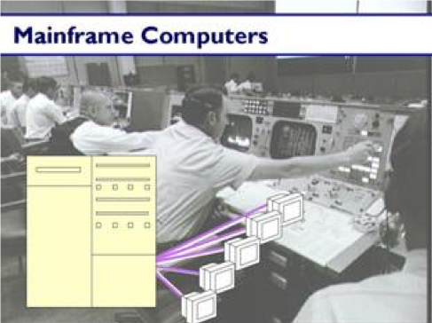

CSE 154
Lecture 1: Intro to CSE 154, the Internet, and Basic HTML
Today's Agenda
Introductions
Course Overview
The Internet
Introduction to HTML!
What This Class is About:
An overview of how the Internet works
What is a website and how to create one from scratch
... with semantic markup and design/layout
... with interactivity through client- and server-side programs
... with up to four different languages
... by searching through online documentation
... and by following detailed specifications
... and overall, building design/development strategies across the "full-stack"
The end result? A better understanding of the web, important technologies, and a portfolio for you to show!
CSE 154 Modules
- Webpage structure and appearance with HTML5 and CSS.
- Client-side interactivity with JS DOM and events.
- Using web services (APIs) as a client with JS.
- Writing JSON-based APIs with Node.js.
- Storing and retreiving information in a database with MySQL and server-side programs.
Instructor: Melissa Hovik

Masters student in the Paul G. Allen School of Computer Science And Engineering
Has been a TA for various classes since Spring 2015 (CSE 143, 154, 190, 311, 332, and 341).
Head TA/co-instructor for CSE 154 for the last two years, and is very excited to be teaching a new summer offering!
Office Hours (CSE 210): Mondays 2:30-3:30PM and Wednesday 11-12PM
TAs


Don't forget to check out the Advice for CSE 154 Students on each TA's About Me Page!
Course Resources
Course Website - it has everything!
- Review the Syllabus
- Materials including Readings, Pre-Checks, and materials will be posted regularly on the course calendar
- Use the Piazza Message Board to ask questions, share interesting web-related finds, etc.
- GitGrade to submit assignments (first assignment will be posted tonight)
- Canvas to submit most Lecture Pre-Checks (and review grades over the quarter)
- No course textbook, but readings are chosen to support each lecture (MDN is the reference we will use most often)
Course Structure
Lectures 3x per week
- Lecture "Pre-Checks" due 12:30PM day of lecture unless otherwise noted (usually as Canvas quizzes, will also be posted on calendar)
Sections 2x per week (Tuesday and Thursday)
- More hands-on practice of concepts introduced in lecture, new material is occassionally introduced.
- You'll have the same TA both days, but the rooms will be different and Thursday sections will combine two classes in a "lab-like" structure
- The University has a short term loan program if you do not have a computer of your own to bring.
Getting Help
- Instructor Office Hours
- Web Programming Lab (WPL)
- Piazza Message Board
- Mentor Circles - Commit to 1 extra hour a week to focus on section material and CPs!
Ask questions, take advantage of CP's to explore the material, and study a little each day.
Course Deliverables
1 Creative Project (CP) + 1 HW for each Module 1-4
- CPs (10%) are smaller assignments designed to give students freedom to explore the material and get feedback before applying to formal HW assignments. And you can create something you can show to others!
- HW (30%) are the formal assessments for each Module.
Section Participation (10%)
Short Lecture Pre-Checks (5%)
Two Exams (30%)
Final "Full-Stack" Project! (15%)
Web Development Tools
Throughout the quarter, we will be using the following web development tools:
- Chrome: a browser to view and debug webpages
- Atom: a text editor to write HTML/CSS/JS/SQL (with various helpful packages available)
- Command Line with Git: to clone/push CP/HW repositories (available packages with Atom)
Make sure to follow the CSE 154 Setup Guide before section tomorrow (and ask on Piazza if you have any questions!).
So, what is a web page, really?
Web Languages / Technologies
Hypertext Markup Language (HTML): semantic markup for web page content
Cascading Style Sheets (CSS): styling web pages
Client-side JavaScript: adding programmable interacitvity to web pages
Asynchronous JavaScript and XML: fetching data from web services using JavaScript fetch API
JavaScript Object Notation (JSON): file format for organizing human-readable data
REST APIs: web services handling and responding to client requests on the server
SQL: interaction with databases
The Internet
Wikipedia: http://en.wikipedia.org/wiki/internet
A connection of computer networks built on the Internet Protocol (IP)
Layers of communication protocols (click the down arrow to see more)
So's the difference between the Internet and the World Wide Web (WWW)?
Layered Architecture
Physical layer: devices such as ethernet, coaxial cables, fiber-optic lines, modems
Data Link Layer: basic hardware protocols (ethernet, wifi, DSL PPP)
Network/Internet Layer: basic software protocol (IP)
Transport Layer: adds reliability to network layer (TCP, UDP)
Application Layer: implements specific communications for each kind of program (HTTP, POP3/IMAP, SSH, FTP)

The Internet: A Brief History
Began as a US Department of Defense network called ARPANET (1960s-70s)
Initial services: electronic mail, file transfer
Opened to commercial interests in late 80s
WWW created in 1989-91 by Tim Berners-Lee
Popular web browsers released: Netscape 1994, IE 1995
Then... all this: http://www.evolutionoftheweb.com
Other notable web events:
- Amazon.com opens in 1995; Google in January 1996
- Hamster Dance web page created in 1999
- Facebook founded in February 2004
- Chrome released in September 2008
- Snapchat created in September 2011

Question
Who "runs" the Internet? Who is responsible for overseeing it?
People and Organizations (and Companies)
Internet Engineering Task Force (IETF): Internet protocol standards
Internet Corporation for Assigned Names and Numbers (ICANN): decides top-level domain names
World Wide Web Consortium (W3C): web standards
These protocols are carried out in large part by Internet service providers and other companies and organizations who build Internet-related products and applications
Internet Protocol (IPv4 or IPv6)
A simple protocol for attempting to send data between two computers
Each device has a 32- or 128-bit IP address for other machines to find it. For IPv4 this is written as four 8-bit numbers (0-255)

Find your internet IP address: whatismyip.com
Find out your local IP address: in a terminal, type ipconfig
(Windows) or ifconfig (Mac/Linux)
Domain Name System (DNS)
Think about some domain names you know (e.g. https://www.google.com). What do they end with?
Used to be only .com, .org, .net, .gov, .edu, .int, .mil
... then there were two letter extensions like .uk, .es
Now .everything!
A Domain Name System is a set of servers that map written hostnames to IP addresses
- Example:
www.cs.washington.edu → 128.208.3.88
Transmission Control Protocol (TCP)
Adds multiplexing, guaranteed message delivery on top of IP
Multiplexing: multiple programs using the same IP address
- Port: a number given to each program or service
- port 80: web browser (port 443 for secure browsing)
- port 25: email
- port 22: ssh
- port 5190: AOL Instant Messenger
- More common ports
Some programs (games, streaming media programs) use simpler UDP protocol instead of TCP
The World Wide Web (WWW)
Wait, how is it different than the Internet again?
The Internet describes all the interconnected devices that use the "internet protocol." The World Wide Web is the subset of the Internet that uses the HTTP and HTTPS protocols, mostly to transmit "webpages."
The World Wide Web
Web server: software that listens for web page requests
- Apache
- Microsoft Internet Information Server (IIS) (part of windows)
- NGINX
Web browser: fetches/displays documents from web servers
- Google Chrome
- Mozilla Firefox
- Microsoft Internet Explorer (IE) and Edge
- Apple Safari
- Opera
Uniform Resource Locator (URL)
An identifier for the location of a document on a web site
A basic URL:
https://courses.cs.washington.edu/courses/cse154/19su/
~~~~~ ~~~~~~~~~~~~~~~~~~~~~~~~~~ ~~~~~~~~~~~~~~~~~~~
protocol host pathUpon entering this URL into the browser, it would:
- Ask the "DNS" server for the IP address of
courses.cs.washington.edu - Connect to that IP address at port 80
- Ask the server to
GET /courses/cse154/19su/index.html - Display the resulting page on the screen
Hypertext Transport Protocol (HTTP)
The set of commands understood by a web server and sent from a browser
Some HTTP commands (your browser sends these internally):
| HTTP Method | Description |
|---|---|
| GET resource | Retrieve a resource from the server |
| POST resource | Change data on the server |
| PUT resource | Replace data on the server |
| DELETE resource | Remove data from the server |
We will learn more about get and post when we start
the server-side programming module of this course
http error codes
when something goes wrong, the web server returns a special "error code" number to the browser, possibly followed by an html document
common error codes:
| number | meaning |
|---|---|
| 200 | ok |
| 301-303 | page has moved (permanently or temporarily) |
| 403 | you are forbidden to access this page |
| 404 | page not found |
| 418 | i'm a teapot (fun fact, example) |
| 500 | internal server error |
the real innovation
http built resilience into the internet by creating the 404.
a website will always give a response, even if what a user wants isn't found.
examples:
they are everywhere
except in the allen center (cse building)
activity: what do you see here?

html
getting started with html
there are many different types of html tags used to structure web pages (we can't possibly cover all of them within class). we've consolidated a handy slide deck with examples of common tags you should know, but you can find a comprehensive list on mdn (it's a great bookmark page for reference this quarter!)
you are not expected to memorize these! you'll all get more practice tomorrow in section :)
hypertext markup language (html)
describes the content and structure of information on a web page
- not the same as the presentation (appearance on screen)
surrounds text content with opening and closing tags
each tag's name is called an element
- syntax:
<element> content </element> - example:
<p>this is a paragraph</p>
most whitespace is insignificant in html (ignored or collapsed to a single space)
we will use a newer version called html5
structure of an html page
<!doctype html>
<html>
<head>
information about the page
</head>
<body>
page contents
</body>
</html>html
an html page is saved into a file ending with extension .html
the <head> tag describes the page and the <body> tag
contains the page's content
the doctype tag tells the browser to interpret our page's code as
html5, the lastest/greatest version of the language
let's start with a template!
html tag attributes
some tags can contain additional information called attributes
- syntax:
<element attribute="value" attribute="value"> content </element> - example:
<a href="page2.html">next page</a>
some tags don't contain content and can be opened and closed in one tag
- syntax:
<element attribute="value" attribute="value" /> - example:
<br />, <hr />, <br>, <hr> - example:
<img src="bunny.jpg" alt="pic from easter" />
comments: <!-- ...-->
comments to document your html file or "comment out" text
<!-- my web page, by mowgli hovik
cse 154, spring 2048 -->
<p>school is<!-- not --> a lot of fun!</p>html
school is a lot of fun!
output
many web pages are not thoroughly commented (or at all)
still useful at top of page and for disabling code
comments cannot be nested and cannot contain a --
do not leave commented-out html code in your homework assignments!
looking ahead
remember to bring a computer with atom/git installed to section tomorrow.
beginning of quarter survey due wednesday 11pm, first pre-check will be posted tomorrow.
fill out the mentorship circle survey if you are interested!